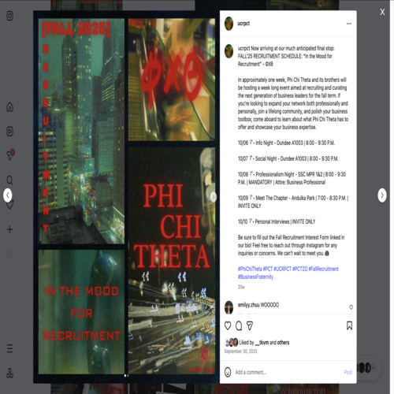
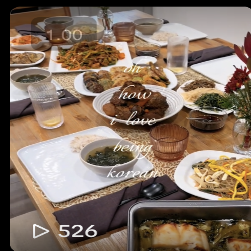
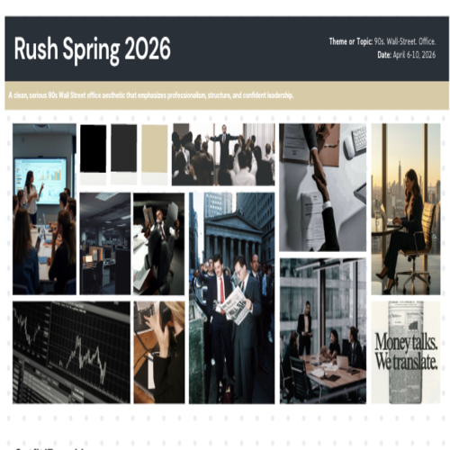
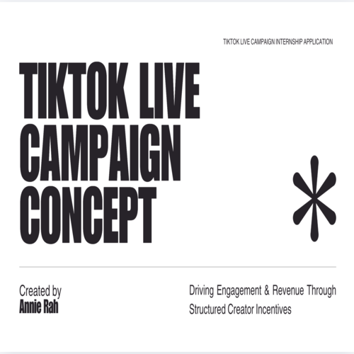

I am a second-year Pre-Business student at UC Riverside with a strong passion for marketing, brand strategy, and digital content creation. As an aspiring marketing professional, I’m interested in understanding consumer behavior and how brands build meaningful relationships with their audiences. My academic journey has given me a solid foundation in business fundamentals, while my hands-on experiences allow me to apply those concepts in real-world environments.
As a Marketing Intern and active member of Phi Chi Theta, I contribute to planning and promoting organizational initiatives while strengthening the fraternity’s brand presence on campus. Through collaboration and creative strategy, I assist in developing marketing materials and outreach efforts to increase engagement and visibility. Being part of a professional business organization has strengthened my leadership, teamwork, and networking skills.
In addition to my internship experience, I work as a UGC creator where I develop engaging digital content tailored to target audiences and brand guidelines. Through this role, I have enhanced my skills in storytelling, audience engagement, brand alignment, and performance analysis. I’m eager to continue growing in marketing, brand management, and digital strategy by combining creativity with data-driven decision making.
• Assisted in executing marketing campaigns for recruitment and events
• Created social media content and promotional materials to increase engagement
• Collaborated with team members to strengthen brand strategy and campus visibility
• Supported outreach communications for prospective members
• Produced short-form digital content aligned with brand guidelines and target audiences
• Developed creative concepts based on current trends and audience behavior
• Analyzed engagement metrics to improve content performance and reach
• Strengthened skills in branding, storytelling, and digital marketing strategy
• Participated in professional development workshops and networking events
• Collaborated on team-based projects and organizational planning
• Built connections with peers, alumni, and guest speakers



